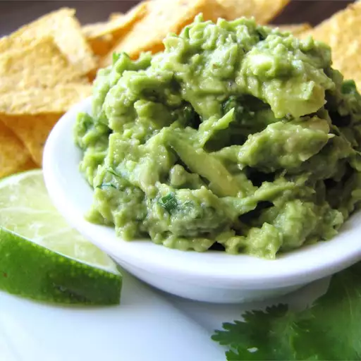

Stir together the avocado and lemon juice in a serving bowl; add the green onion and cilantro; mix well. Season with salt and pepper. Serve immediately or store covered in refrigerator with avocado pits in the bowl to keep from browning.